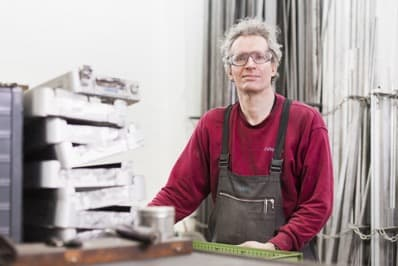
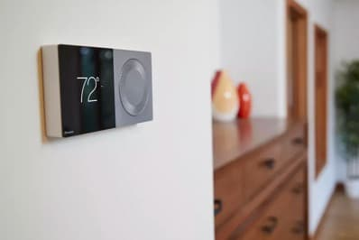
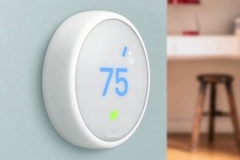

About AuVerte
Merging the environmental with modern aesthetics
-
Sustainability
Safe energy in building, build products that have green footprint
Sustainability is the process of maintaining change in a balanced environment, in which the exploitation of resources, the direction of investments, the orientation of technological development and institutional change are all in harmony and enhance both current and future potential to meet human needs and aspirations.
-

Self-Configuring Systems
Manufacturing Partner
Social responsibility is an ethical framework and suggests that an entity, be it an organization or individual, has an obligation to act for the benefit of society at large. Social responsibility is a duty every individual has to perform so as to maintain a balance between the economy and the ecosystems.
-

Internet of Things
End-to-end IPv6
The future is here for guestroom IoT with end-to-end IPv6 connectivity. This obsoletes the old conventional gateway-based solutions and future proves your IoT technology investment. Integrating full commercial cyber security measures into all devices addresses the thread of multi-homed IoT systems.
-
Cyber Security
Assure the privacy and comfort of your guest
AuVerte acknowledges that the integrity and availability of networked software-based systems is of critical importance. AuVerte’s system has been designed with cyber security not as an afterthought but as a core building block. Chip-level protection of root-of-trust, tamper detection, strict avoidance of hardcoded secrets and backdoors, use of certificates and a defense-in-depth strategy are key elements of the design. The devices are using a small trusted computing base and do not use overloaded third-party software frameworks. Secure firmware upgrades bring the devices forward to a secure state and revoke compromised assets for known vulnerabilities or security breaches.
-

Product Design
Made for hotel guest rooms
The products are focused on ease-of-use with a pleasant and intuitive guest experience. With an extensive range of colors and materials, a majority of your aesthetic requirements can be met. Ultra-thin and built for durability, these products are equally appreciated by interior designers, operators and guests alike. The use of high-contrast displays provides good visibility during day and night time. AuVerte applies advanced product life cycle management which avoids planned obsolescence, facilitating an industry leading warranty and product recyclability.
-
Social Responsibility
Shared success
AuVerte believes in working together with people with special needs and proudly engages with social organizations that provide work opportunities for such individuals. AuVerte designs its product line so that a variety of tasks can be performed by persons of different skill levels and physical capabilities. The partner organizations of AuVerte are ISO-9000 certified.